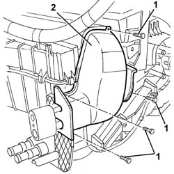
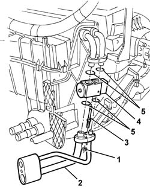

5040B32 expansion valve (orifice tube) r r with air conditioner case removed
- Path
- Procedures > 50 AUXILIARY UNITS > 5040 AIR CONDITIONING CASING AND COMPONENTS > 5040B system safety check devices > 5040B32 expansion valve (orifice tube) r r with air conditioner case removed
- Kind
- repair procedure (removal / refitting; the operation number is the code)
- Applies to
- all engines; all production periods
- Interactive page
- https://sloeber94.github.io/elrnDB-a147/en/#/3025429
Applies to: all engines; all production periods
 Removing
Removing
 Refitting
Refitting1. Undo the bolts fixing the shield for the expansion valve.
2. Remove the shield.

Applies to: all engines; all production periods
1. Unscrew the nuts.
2. Remove the pipe connector.
3. Unscrew the bolts.
4. Remove the expansion valve.
5. Recover the gaskets.
Do not reuse the seals when refitting.

Applies to: all engines; all production periods
Refitting
RemovingCheck that the expansion valve is not damaged.
Position the new gaskets on the expansion valve, then secure it using the bolts.
Position the pipe connector and secure it using the nuts.
Position the shield and fix it using the bolts